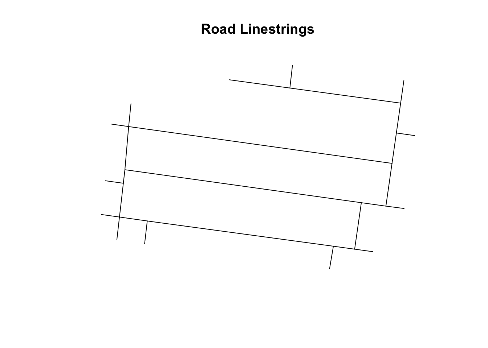
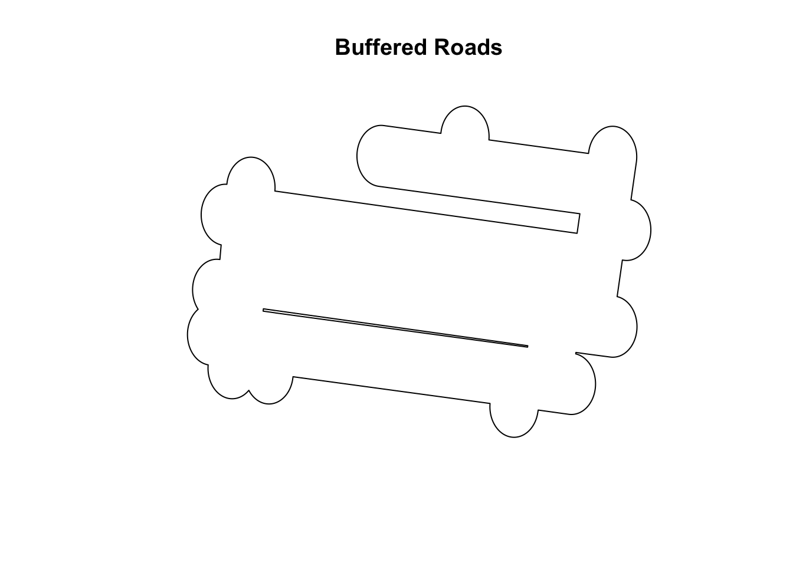
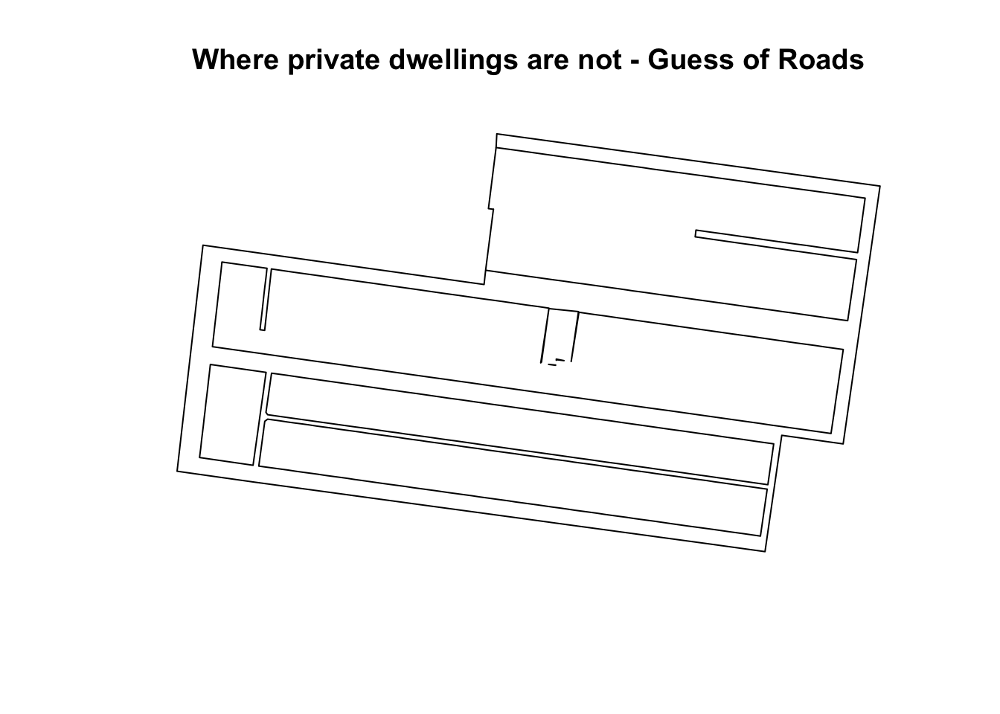
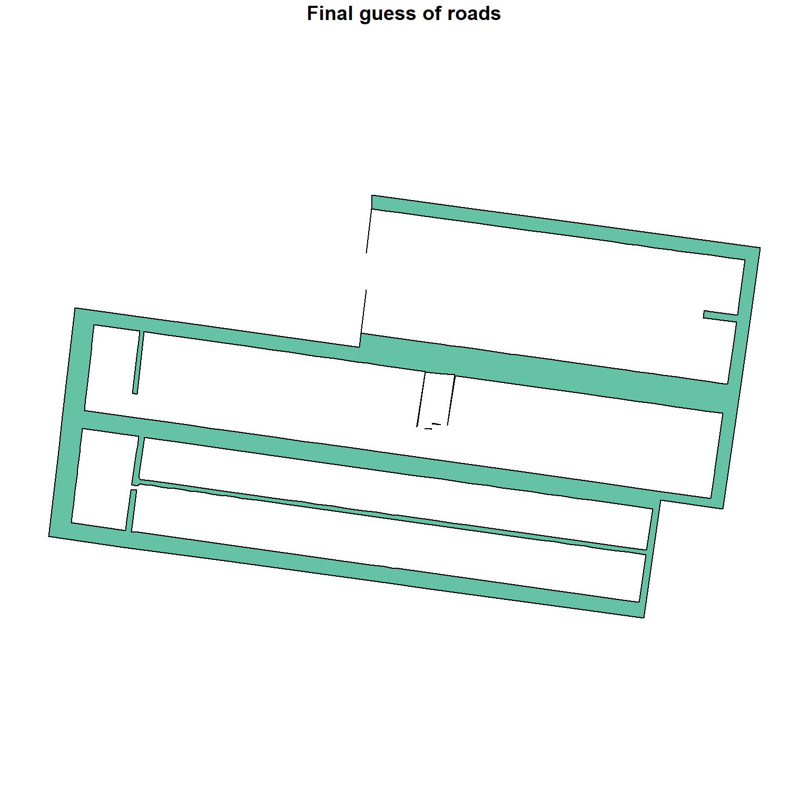

Tree Data Documentation
This page will walk through a step by step version of the model used to determine tree coverage.
Canopy Cover
We first download the raster file using chmloader::download_chm, and provide the function the bounding box of the SA1 we are currently analysing. This returns a raster image, with each pixel having height about the canopy. Pixels with canopy heights below the threshold (default zero) are filtered out. The map below displays this cleaned raster.
The raster is then simplified further into a single layer to remove the canopy heights themselves. The polygon is further refined by only selecting canopy coverage within the current SA1.
Road Network
Now we turn our attention to the road network, which the state government does not provide polygons for. I use two methods to infer the road network, and then take the union of the two as a robustness measure.
Instead of polygons, the Victorian government provides linestrings along the centres of roads, but that does not give information about their width. Here is what that road lines looks like in the data.
[1] "simplified"
As a best guess, I buffer out each of these strings by ~20 metres, which is too largefor small roads, and too small for large roads, however this buffered polygon should cover all road surfaces, despite inevitably covering private land as well. This ‘buffered roads’ polygon is our first estimate of where roads are.

Another way of guessing where roads are is to look at where private dwellings are not. For example, in suburban areas, the areas between private lots are typically roads, so we can just take the difference between dwellings and the broader SA1 shapefile.
Shown below is this difference.

Now, we combine our two guesses for where roads are, and find a polygon that is the intersection of both our methods. In the end, our roads polygon is a) within 20 metres of a road linestring from the VicGov, and b) not overlapping with any property boundaries.

Dwellings themselves
Now, we also need to categorise dwellings into ‘private land’, or ‘public land’, which is done using the ‘Feature Preventing Development’ flag in the dwelling dataset.
Final Map
Now, with a polygon for trees, a polygon for dwellings, and a polygon for the road network, we can combine it into one map for visulaisation.
Calculate Overlaps
Now, with the map complete, we iterate through each lot in the SA1 and measure its overlap with the tree layer. This is then amended to the full database for further analysis.
# A tibble: 10 × 7
lat lon coverage total_area sa1 zone_short geom
<dbl> <dbl> <dbl> <dbl> <dbl> <chr> <POLYGON [°]>
1 -37.8 145. 14.1 238. 2.06e10 Mixed use ((144.9715 -37.77663, 14…
2 -37.8 145. 0 164. 2.06e10 Neighbour… ((144.9727 -37.77733, 14…
3 -37.8 145. 0 159. 2.06e10 Neighbour… ((144.9728 -37.77734, 14…
4 -37.8 145. 0 231. 2.06e10 Mixed use ((144.971 -37.77715, 144…
5 -37.8 145. 0 193. 2.06e10 Mixed use ((144.9711 -37.77691, 14…
6 -37.8 145. 0 168. 2.06e10 Neighbour… ((144.9754 -37.77575, 14…
7 -37.8 145. 0.588 69.0 2.06e10 Neighbour… ((144.9748 -37.77561, 14…
8 -37.8 145. 26.4 240. 2.06e10 Neighbour… ((144.9734 -37.77672, 14…
9 -37.8 145. 0 233. 2.06e10 Neighbour… ((144.974 -37.77653, 144…
10 -37.8 145. 0 135. 2.06e10 Neighbour… ((144.9761 -37.7758, 144…